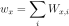
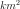
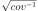
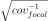
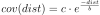
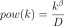

The Covariance Module¶
-
class
kite.Covariance(scene, config=<kite.covariance.CovarianceConfig object>)[source]¶ Construct the variance-covariance matrix of quadtree subsampled data.
Variance and covariance estimates are used to construct the weighting matrix to be used later in an optimization.
Two different methods exist to propagate full-resolution data variances and covariances of
kite.Scene.displacementto the covariance matrix of the subsampled dataset:- The distance between
kite.quadtree.QuadNodeleaf focal points,kite.covariance.Covariance.matrix_focaldefines the approximate covariance of the quadtree leaf pair. - The _accurate_ propagation of covariances by taking the mean of
every node pair pixel covariances. This process is computational
very expensive and can take a few minutes.
kite.covariance.Covariance.matrix_focal
Parameters: - quadtree (
Quadtree) – Quadtree to work on - config (
CovarianceConfig) – Config object
-
covarianceAnalytical(regime=0)[source]¶ Caluclate exponential analytical covariance
Empirical Covariance function based on the power spectral model fit and not directly on the power spectrum as in
covariance_func()frommodelPowerspec()Warning
Deprecated!
Note
covarianceAnalytical is not a good name for this function, better rename to ‘covarianceFromModel’, ‘covarianceModelBased’ or
Returns: Covariance and corresponding distances. Return type: tuple, numpy.ndarray(covariance_analytical, distance)
-
covariance_func¶ Getter: (Cached) Covariance function estimated directly from the power spectrum of displacement noise patch using the cosine transform. Type: tuple, numpy.ndarray(covariance, distance)
-
covariance_matrix¶ Getter: (Cached) Covariance matrix calculated from mean of all pixel pairs inside the node pairs (full and accurate propagation). Type: numpy.ndarray, size (nleavesxnleaves)
-
covariance_matrix_focal¶ Getter: (Cached) Approximate Covariance matrix from quadtree leaf pair distance only. Fast, use for intermediate steps only and finallly use approach covariance_matrix.Type: numpy.ndarray, size (nleavesxnleaves)
-
covariance_model¶ - Covariance model parameters for
modelCovariance()retrieved fromcovarianceAnalytical.
Note
using this function implies several several model fits: fit of the spectrum and fit of the cosine transform. Not sure about the consequences, if this is useful and/or meaningful
Getter: Get the parameters. Type: tuple, aandb
-
covariance_model_rms¶ Getter: RMS missfit between covariance_modelandcovariance_funcType: float
-
export_weight_matrix(filename)[source]¶ - Export the full
weight_matrixto an ASCII - file. The data can be loaded through
numpy.loadtxt().
Parameters: filename (str) – path to export to - Export the full
-
getLeafCovariance(leaf1, leaf2)[source]¶ - Get the covariance between
leaf1andleaf2from - distances.
Parameters: Returns: Covariance between
leaf1andleaf2Return type: float
- Get the covariance between
-
getLeafWeight(leaf, model='focal')[source]¶ - Get the total weight of
leaf, which is the summation of - all single pair weights of
kite.Covariance.weight_matrix.

Parameters: Returns: Weight of the leaf
Return type: float
- Get the total weight of
-
noise_coord¶ Coordinates of the noise patch in local coordinates.
Setter: Set the noise coordinates Getter: Get the noise coordinates Type: numpy.ndarray,[llE, llN, sizeE, sizeN]
-
noise_patch_size_km2¶ Getter: Noise patch size in . Type: float
-
nthreads¶ - Number of threads (CPU cores) to use for full covariance
- calculation
Setting
nthreadsto0uses all available cores (default).Setter: Sets the number of threads Type: int
-
plot¶ Getter: (Cached) Simple overview plot to summarize the covariance estimations.
-
powerspecModel(k)[source]¶ - Calculates the model power spectrum based on the fit of
powerspec_model().
Parameters: k (float or numpy.ndarray) – Wavenumber(s)Returns: Power at wavenumber kReturn type: float or numpy.ndarray
-
powerspec_model¶ - Fit function to power spectrum based on the spectral model parameters
modelPowerspec()
Returns: Model parameters aandbReturn type: tuple, floats
-
powerspec_model_rms¶ Getter: RMS missfit between powerspecNoise1Dandpowerspec_model`Type: float
-
selectNoiseNode()[source]¶ Choose noise node from quadtree the biggest
QuadNodefromQuadtree.Returns: A quadnode with the least signal. Return type: QuadNode
-
setConfig(config=None)[source]¶ Sets and updated the config of the instance
Parameters: config ( CovarianceConfig, optional) – New config instance, defaults to configuration provided by parentScene
-
structure_func¶ Getter: (Cached) Structure function derived from noise_patch:type: tuple,numpy.ndarray(structure_func, distance)Adapted from http://clouds.eos.ubc.ca/~phil/courses/atsc500/docs/strfun.pdf
-
syntheticNoise(shape=(1024, 1024), dEdN=None, anisotropic=False)[source]¶ Create random synthetic noise from data noise power spectrum.
This function uses the power spectrum of the data noise (
noise_data) (powerspecNoise()) to create synthetic noise, e.g. to use it for data pertubation in optinmizations. The default sampling distances are taken fromkite.scene.Frame.dEandkite.scene.Frame.dN. They can be overwritten.Parameters: - shape (tuple, optional) – shape of the desired noise patch. Pixels in northing and easting (nE, nN), defaults to (1024, 1024).
- dEdN – The sampling distance in easting, defaults to
(
kite.scene.Frame.dE,kite.scene.Frame.dN).
Returns: synthetic noise patch
Return type:
-
weight_matrix¶ Getter: (Cached) Weight matrix from full covariance . Type: numpy.ndarray, size (nleavesxnleaves)
-
weight_matrix_focal¶ Getter: (Cached) Approximated weight matrix from fast focal method . Type: numpy.ndarray, size (nleavesxnleaves)
-
weight_vector¶ Getter: (Cached) Weight vector from full covariance . Type: numpy.ndarray, size (nleaves)
-
weight_vector_focal¶ Getter: (Cached) Weight vector from fast focal method . Type: numpy.ndarray, size (nleaves)
- The distance between
The CovarianceConfig¶
-
class
kite.covariance.CovarianceConfig(**kwargs)[source]¶ Undocumented.
-
♦
noise_coord¶ numpy.ndarray(pyrocko.guts_array.Array), optionalNoise patch coordinates and size,
-
♦
a¶ float, optionalExponential covariance model; scaling factor. See
modelCovariance()
-
♦
b¶ float, optionalExponential covariance model; exponential decay. See
modelCovariance()
-
♦
variance¶ float, optionalVariance of the model
-
♦
adaptive_subsampling¶ bool, default:TrueAdaptive subsampling flag for full covariance calculation.
-
♦
covariance_matrix¶ numpy.ndarray(pyrocko.guts_array.Array), optionalCached covariance matrix, see
covariance_matrix
-
♦
Model Assumptions¶
-
kite.covariance.modelCovariance(distance, a, b)[source]¶ Exponential function model to approximate a positive-definite covariance
We assume the following simple covariance model to describe the empirical noise observations:

Parameters: - distance (float or
numpy.ndarray) – Distance between - a (float) – Linear model parameter
- b (float) – Exponential model parameter
Returns: Covariance at
distanceReturn type: - distance (float or
-
kite.covariance.modelPowerspec(k, beta, D)[source]¶ Exponential linear model to estimate a log-linear power spectrum
We assume the following log-linear model for a measured power spectrum:

Parameters: - k (float or
numpy.ndarray) – Wavenumber - a (float) – Exponential model factor
- b (float) – Fractional model factor
- k (float or